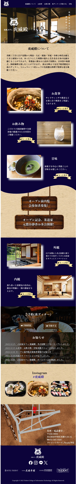

和風を取り入れるためにこのウェブサイトは、日本の伝統的な要素で ある青色、明朝体フォント、畳や障子の模様などのデザインを採用す ることで、和風な雰囲気を醸し出しています。また、背景画像に和紙 と呼ばれる日本の伝統的な和紙を使用し、より和風な印象にしていま す。また、バナーのデザインは木を使用しており、日本の伝統的な木 造家屋を彷彿とさせます。
To give the site a Japanese feel, the design uses traditional Japanese elements such as blue, mincho fonts, tatami mats and shoji paper patterns. Traditional Japanese paper, known as washi, is also used as the background image to give a more Japanese feel. The banner design also uses wood, reminiscent of traditional Japanese wooden houses.
メインカラーには#E3D0ABを使用し、和風のサイトであることを表現しました。また、アクセントカラーとして#0B0339を使用し、明るく読みやすいサイトにしました。これは、サイトをわかりやすくし、グループやコンテンツを区別できるようにするためです。
#E3D0AB Colour was used as the main colour to indicate that the site is Japanese in style. We also used colour #0B0339 as the accent colour to make the site bright and easy to read. This is to make the site easy to understand and distinguish groups and content.
